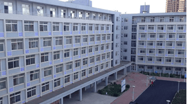
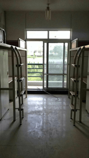
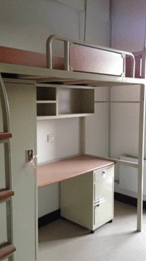
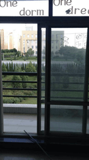

生活区内共有六栋宿舍楼，16级的男生将入住五舍或六舍，生活区唯一一栋东西走向的宿舍楼，也就是说，楼内的每个房间都可以照到阳光0.0。
生活区以学院桥与教学区相连，内部生活配套设施较为齐全，食堂、超市、邮局、洗衣店、理发店、澡堂、眼镜店、复印店、移动营业厅、ATM提款机、篮球场一应俱全，基本可以满足同学们的日常需求。

软院的宿舍全部为4人寝，上床下桌，楼梯柜，刷卡进门，并配有独立的卫生间和盥洗室，除一楼外有都有阳台，床的大小为1.9*0.9米，房间的大小依房间位置的不同有些许的差异。在这里小编想提醒一下各位学弟学妹，寝室里没有淋浴设施。

被分到一楼宿舍的同学需要注意平时的防潮工作，在衣柜里面备上几袋活性炭、除湿盒还是有必要的。为了不给有心人以可乘之机，请不要把贵重的鞋子、衣物等晾在外面=_=。
宿舍间的连廊可供楼层较高同学们平时晾衣服使用，宿舍楼前的晾衣绳也可以晒被子。
除此之外，每个宿舍楼下还有自助终端机和贩卖机可方便同学们为校园一卡通充钱、买矿泉水等。
宿舍楼夜间22:30后封闭，早上6:00开门，请同学们遵守宿舍楼开关门时间以免被锁在门外。